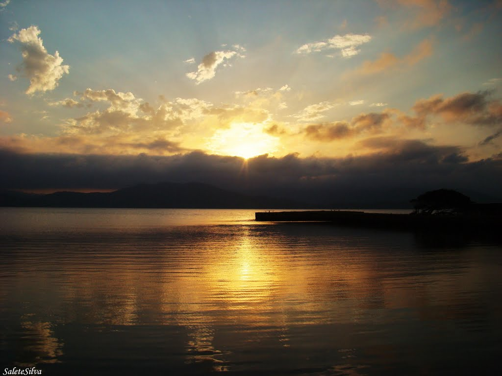
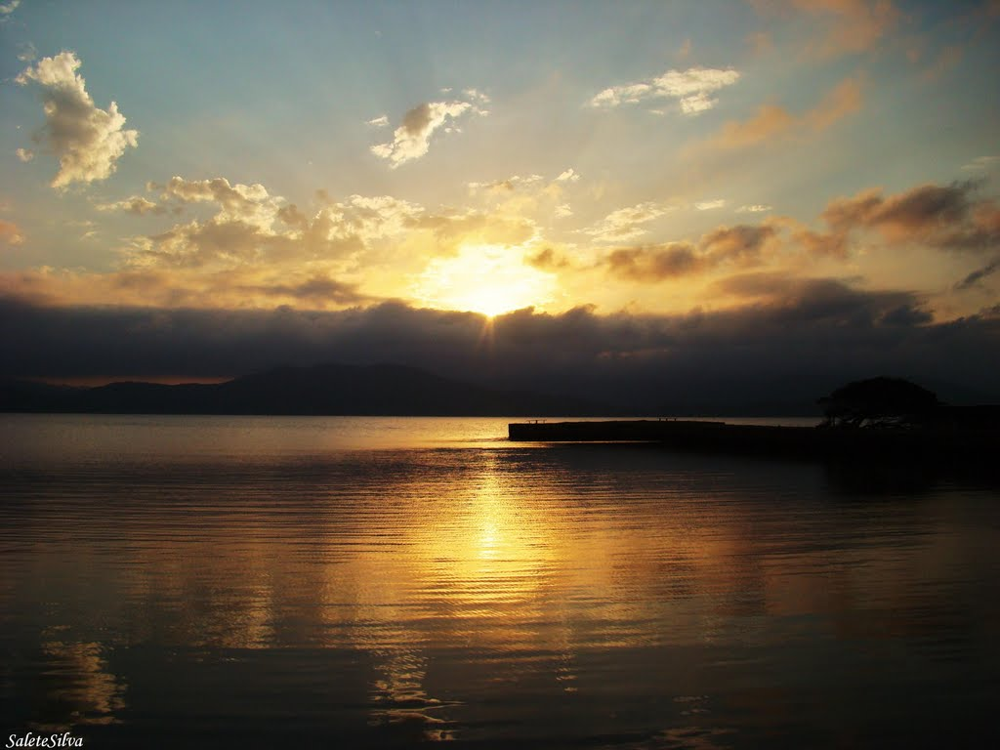

-
⠀⠀⠀⠀⠀
-
 ⠀Inicio
⠀Inicio
-
 ⠀Oque Fazer
⠀Oque Fazer
 ⠀Sobre a Cidade
⠀Sobre a Cidade
- ⠀Quem Somos
Portinho da Vila
Vila Nova
O Portinho da Vila em Imbituba, tem um visual único da Lagoa do Mirim, o Portoda Vila é um dos locais turísticos mais indicados de Imbituba para lazer edescanso. Aqui as famílias podem sentar à beira da lagoa, aproveitar a sombra dasárvores gigantes e relaxar na pracinha. Sua história começa por volta de 1930,quando os hidroaviões de Henrique Lage, fundador da cidade, vinham do Rio deJaneiro para amerissar nas águas calmas da Lagoa do Mirim e aportavam no cais em forma de cruz.
Anos depois, o Porto da Vila serviu de armazém de carvão e lenha. Hoje, acolhefamílias, casais e simpatizantes de esportes como o Stand Up Paddle e o jetski.Além disso, se destaca pela gastronomia, trazendo opções diferentes de pizzas epratos tendo como base, principalmente, os frutos do mar. O Porto da Vila contatambém com uma academia ao ar livre e quadra de vôlei de areia para moradores e visitantes
Anos depois, o Porto da Vila serviu de armazém de carvão e lenha. Hoje, acolhefamílias, casais e simpatizantes de esportes como o Stand Up Paddle e o jetski.Além disso, se destaca pela gastronomia, trazendo opções diferentes de pizzas epratos tendo como base, principalmente, os frutos do mar. O Porto da Vila contatambém com uma academia ao ar livre e quadra de vôlei de areia para moradores e visitantes
 X
X
 
